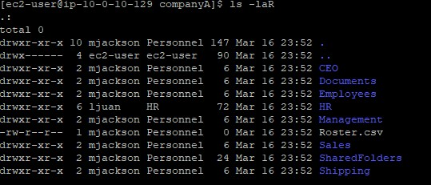
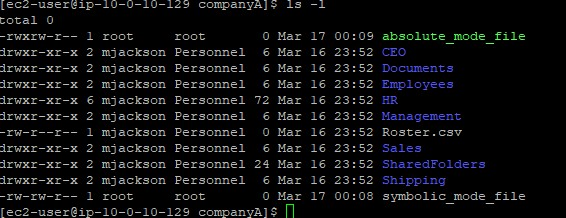
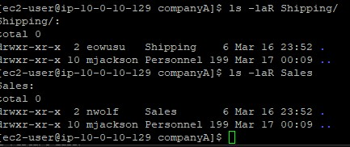

Ownership Management
Used chown -R to recursively set the correct user and group
owners for the entire company directory structure.
Learn to manage file and folder ownership matching a company's group structure, and change file permissions using both symbolic and absolute modes.
Connected via PuTTY (as described in Lab 225). Modified ownership of folders like companyA, HR, and Finance using chown. Created files and updated permissions with both symbolic and absolute chmod modes.
Used chown -R to recursively set the correct user and group
owners for the entire company directory structure.
Changed file permissions using symbolic letters (g+w) and
absolute octal numbers (764).
Detailed record of each task performed during the lab.
cd companyA.sudo chown -R mjackson:Personnel /home/ec2-user/companyA.sudo chown -R ljuan:HR HR.sudo chown -R mmajor:Finance HR/Finance.ls -laR.
-R flag used with chown means recursive, ensuring
both the folder and all its contents get their permissions updated together.
sudo vi symbolic_mode_file, saved and quit.sudo chmod g+w symbolic_mode_file.sudo vi absolute_mode_file.sudo chmod 764 absolute_mode_file.ls -l.
764, the 7 grants the owner full permissions
(4+2+1), the 6 grants the group read+write (4+2), and the 4 grants others
read-only permissions.
sudo chown -R eowusu:Shipping Shipping.sudo chown -R nwolf:Sales Sales.ls -laR Shipping and
ls -laR Sales.
Commands used in this lab for permission management.
chownChanges the ownership of a file or directory for both the user and the group.
-R : Applies the changes recursively to directories and their contentsuser:group : Defines the target user and group in that exact formatchmodChanges the file mode bits (read, write, execute permissions).
g+w : Symbolic mode adding write (w) to the group (g)764 : Absolute mode granting Owner(7), Group(6), Others(4) permissionslsLists directory contents.
-l : Uses a long listing format displaying permissions, owners, and size-aR : Lists all files (including hidden) recursivelychown.-R flag to aggressively change permissions
across nested folders recursively.g+w on chmod.764.Proper execution of permissions determines the overall security profile of any Linux environment. Permissions regulate reading, writing, and executing operations for standard users, their respective groups, and unauthorized observers.
Understanding both symbolic and absolute permission modes empowers administrators with the flexibility needed to solve multiple authorization challenges.